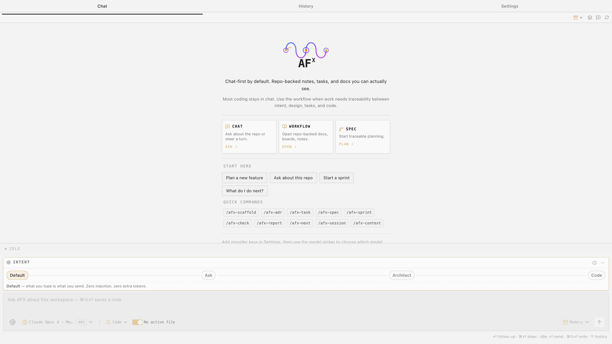

Low-barrier spec-driven
AI coding.
Chat first in VS Code. Add structure when the work needs traceability, clickable workflow steps, and repo-owned markdown.
Latest 2.5.0· AFX Skills 2.6.1 · Pi 0.82.0 · Canvas, Spec Map, skills, OAuth, image-aware chat
Free · Apache 2.0 · VS Code Marketplace · Open VSX · r/agenticflowx
Works in VS Code, VS Code Insiders, VSCodium & Antigravity (pre-2.0).


The chat panel as it opens — three ways in, quick commands, and the intent selector.
afx-workflow — the SDD engine
The spec-driven workflow itself: afx-workflow 2.6.1, 18 core skills, role packs, document templates, and traceability rules — written as standard skills (agentskills.io format), so Claude Code, Codex, and Copilot run the same workflow natively. A separate Apache-2.0 project.
github.com/AgenticFlowX/afx → Powered by · open sourcePi — the coding harness
Sessions, tools, skill discovery, thinking levels, usage reporting, image-aware model metadata, and the 33-provider catalog come from Pi 0.82.0. Bundled as an SDK — or AFX talks to your installed Pi CLI and reuses its config.
pi.dev →